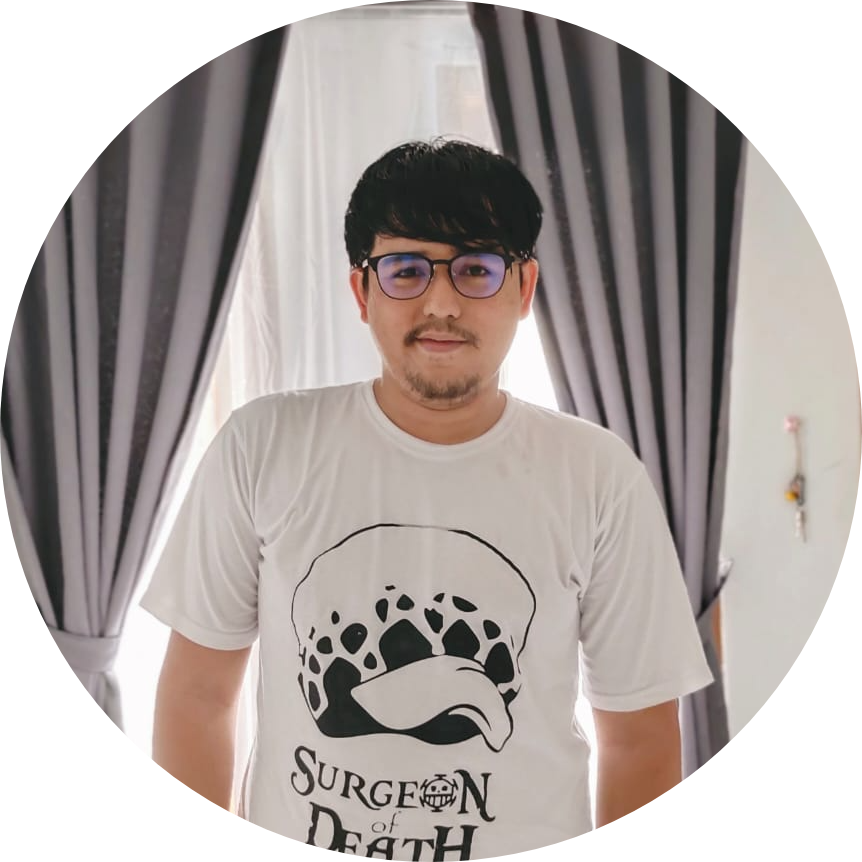

Anwar Muthohari
Software Engineer | Building-Scalable Systems
- +62 851 2134 5682
- anwar.muthohari@gmail.com
- Jakarta, Indonesia

Professional Summary
Experienced Software Engineer with over 9 years of expertise in designing and developing scalable, high-performance systems. Skilled in PHP, Golang, and modern technologies, with a strong commitment to clean architecture and test-driven development. Proven ability to lead teams, solve complex technical problems, and deliver effective solutions. Background includes software development in financial services, banking, and IT consulting industries.
Skills
Languages & Frameworks: PHP (Laravel, CodeIgniter, Yii), Golang (Echo, Gin, Gorilla Mux), Python (FastAPI, Django), JavaScript (Node.js, Vue.js)
Databases: PostgreSQL, MySQL, MariaDB, MongoDB
Cloud & DevOps: AWS, GCP, Alibaba Cloud, Docker, Kubernetes, CI/CD pipelines
Architecture: Clean Architecture, Microservices, RESTful APIs, TDD, Domain-Driven Design
Tools & Platforms: Git, GitHub Actions, GitLab CI, Jira, Postman
Soft Skills: Team leadership, Agile methodologies, mentorship, cross-functional collaboration
Work Experiences
Backend Developer
- Client: BRI (Bank Rakyat Indonesia)
- Project: EDC Single App
- Technologies: Golang, PostgreSQL, Kong, OCP
- Developed backend API services for BRI's EDC Single App application
- Built microservices architecture using Golang, PostgreSQL, with Kong as API Gateway
- Deployed services on OpenShift Container Platform (OCP)
- Created background jobs for transaction processing
Software Engineer II
- Designed and maintained scalable web services and APIs using Golang and PHP (Yii2)
- Developed and implemented unit tests to ensure code reliability and stability
- Promoted clean coding practices, improving maintainability and reducing bugs
- Collaborated with cross-functional teams to deliver technical solutions efficiently
Senior Software Engineer
- Refactored and maintained APIs using PHP (CodeIgniter, Laravel) and Golang
- Performed code reviews and enforced best practices in software development lifecycle (SDLC), fostering a culture of continuous improvement and technical excellence
Software Engineer
- Client: BRI
- Project: BRISPOT Consumer
- Developed and optimized backend APIs using PHP (Laravel) and Node.js
- Resolved complex bugs and improved existing code for better performance
- Delivered project enhancements on tight deadlines with a focus on quality
Junior Software Engineer
- Built and enhanced client-requested projects, collaborating closely with project managers
- Delivered solutions on time by adhering to project timelines and requirements
- Improved performance and functionality through efficient problem-solving
Junior Software Engineer
- Built core features for merchant-facing web applications
- Worked closely with business stakeholders to refine requirements